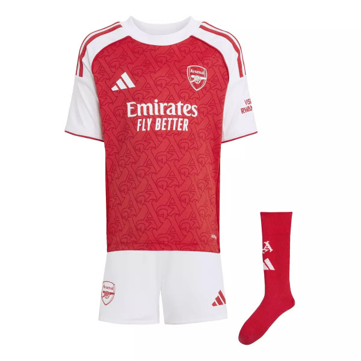
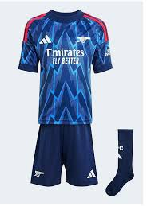
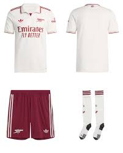
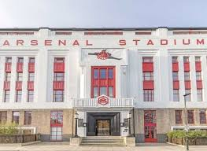
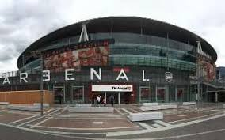

Arsenal Kit for 2025/26 season

The kit is used in all home matches. The away team must wear a kit that does not clash with this kit
Home Kit

Alternative colors used for away matches
Away Kit

This kit is used in matches where the home and away kits would cause a color clash, making it difficult for players and referees to distinguish between teams
Third Kit
Stadiums

Highbury stadium was the historic home of Arsenal. This stadium was developed into apartments. However the Art Deco facades of the stadium was preserved and incorporated into the residential design.
Highbury 1913-2006

This is a modern stadium with 60,000 capacity (a third more than Highbury)
The Emirates 2006-